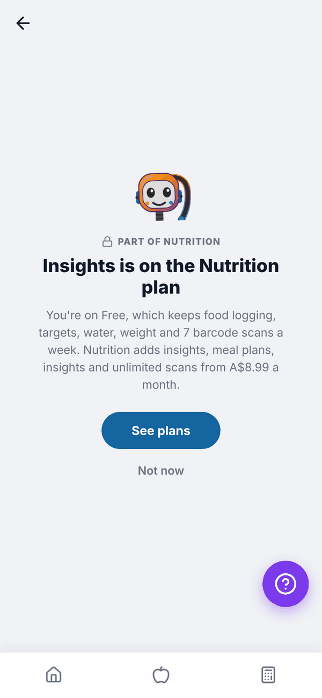
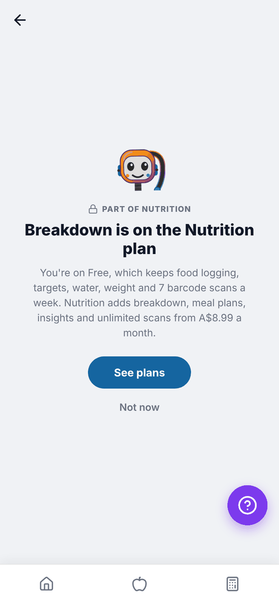
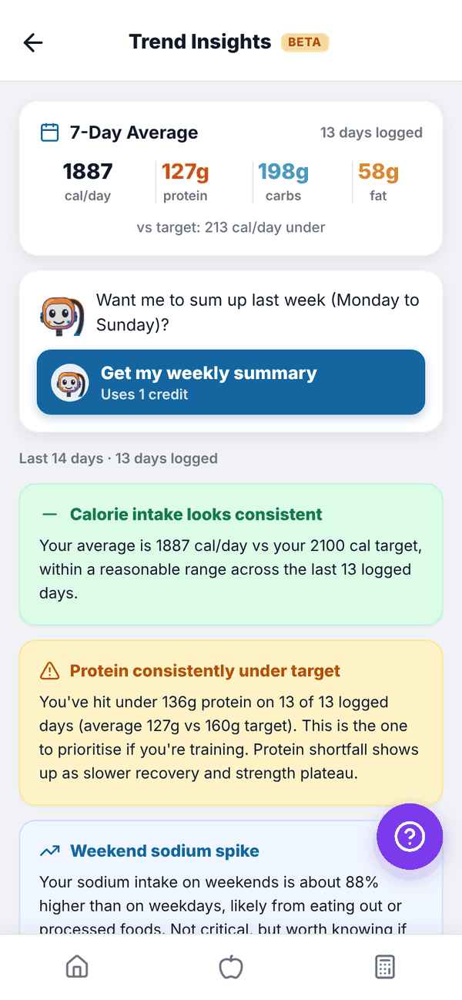
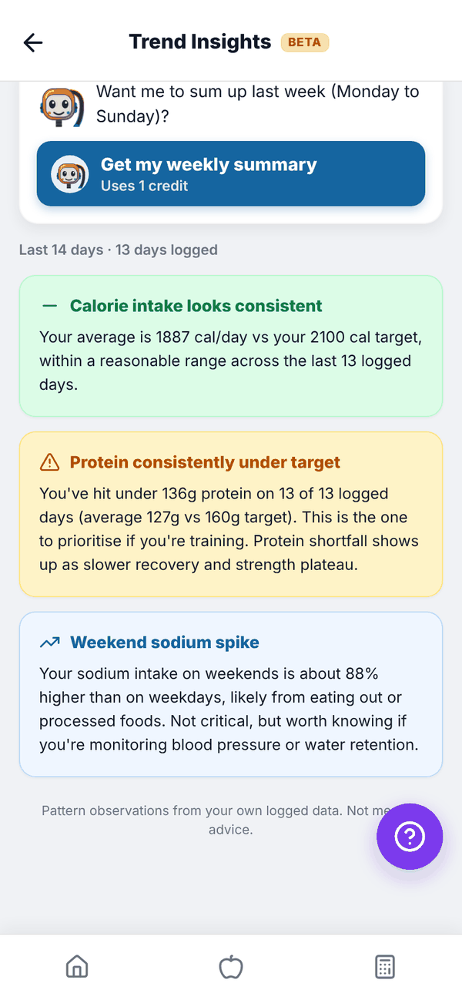
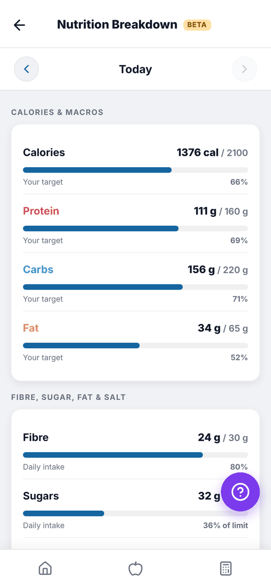
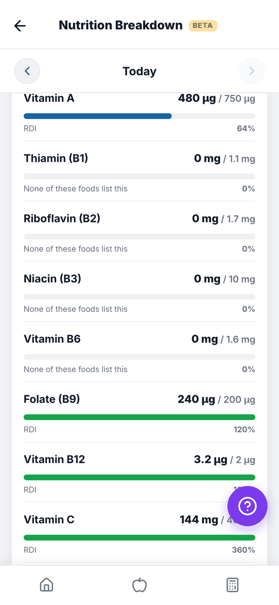

Totality Nutrition guide
Insights and Breakdown
Trend Insights spots patterns across your last 14 days, and Breakdown shows every nutrient for a day, including vitamins and minerals.
Two screens help you understand what you're eating. Both are Trial and Paid. On Free their tiles on Home show a padlock and open a "part of Nutrition" screen with See plans and Not now.


Trend Insights#
Open Insights from Home. From top to bottom:
- 7-Day Average. Your average calories, protein, carbs and fat over today and the 6 days before, counting only days you logged, and how far that is from your target. It shows once you've logged 2 or more days.
- Tali's weekly summary. "Want me to sum up last week (Monday to Sunday)?" Tap Get my weekly summary (uses 1 credit). See below.
- Insights for the last 14 days. Cards that point out patterns, for example "Calorie intake looks consistent", "Consistently under calorie target", "Protein consistently under target", "Hitting protein target every day" or "Weekend sodium spike".


Insights need at least 4 days of logging in the last 14 days. Before that you'll see how many days you've logged so far. If you haven't set targets, you'll be asked to set them in the Calculator first. Insights are pattern observations from your own logged data, not medical advice.
Tali's weekly summary#
Tali writes a short summary of last week (Monday to Sunday, Sydney time): a headline, a few sentences and tips. It costs 1 credit. Once written it's saved, so opening it again is free. Write a fresh one · uses 1 credit writes it again. You need at least 3 days logged that week.
Weekly summaries use AI credits: Trial 10 credits for the whole trial, Nutrition + AI Paid 100 a month. The Nutrition plan has no AI credits, so it shows "Part of Nutrition + AI". See Tali AI.
Breakdown#
Nutrition Breakdown shows everything you ate on one day, added up. Open it from the Breakdown tile. Use the arrows to change the day.
- CALORIES & MACROS. Calories, protein, carbs and fat against your targets, with a percentage.
- FIBRE, SUGAR, FAT & SALT. Fibre, sugars, saturated fat and sodium against label Daily Intake values. Sugars, saturated fat and sodium are limits, so the bar reads "of limit".
- VITAMINS and MINERALS. Each against the adult RDI used on Australian food labels.


Questions#
Why does Insights say I need more days?
It needs at least 4 logged days in the last 14 to find patterns.
Why are some vitamins at 0?
The foods you logged don't list that nutrient. Manual entries and most packaged foods only list the basics.
Can I see Insights on the Nutrition plan?
Yes. Insights and Breakdown are on both paid plans. Only Tali's weekly summary needs Nutrition + AI.
Is this medical advice?
No. It's a summary of what you logged. Talk to your GP or a dietitian about your health.